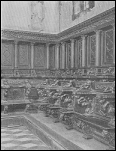

|
| A B C D E F G H I J K L M N O P Q R S T U V W X Y Z |
Stalls — seats in a choir, wholly or partly enclosed on the back and sides — are mentioned from the eleventh century. In the earliest times the subsellia, usually of stone, of the clergy were placed to the right and left of the cathedra of the bishop in the apse of the basilica. After the numbers of the clergy had greatly increased they appear to have stood during choir service, as is evident from the Rule of St. Chrodegang and from the statutes of Aachen of the year 816. Even as late as the eleventh century St. Peter Damien wrote "Contra sedentes in choro". Those who were weak supported themselves on a T-shaped crutch called reclinatorium, which was sometimes censured, sometimes permitted, as in the second "Ordo Romanus". Soon, however, the formae or formulae, seats with backs, appeared (plan of St. Gall of the ninth century), as well as the actual stalli, connected seats in which only arms separated the individual seats, and an architectural effect was sought. The seats, which earlier were frequently movable, now became fixed; the sides and backs were made higher; the ornamentation, originally pictorial, soon became architectural and was carved. A few examples of these have been preserved in Germany from the Romanesque period. At Ratzeburg there are side-pieces, each supported by two small columns with base and capital, that are rounded above like a beam and beautifully broken in the middle by curved fluting. There are also small columns on the oldest choir-stall at Xanten; the face of the back is even more boldly curved, and fantastic heads completely in the round project from it. During the Gothic period the architectonic element was at times exaggerated; the mathematical forms of the labyrinths of lines and the scribing are too jejune, and the structure is often too high and uncomfortable. On the other hand the baldachinum over the highest row of seats was often very magnificent. Germany and France possess a large number of stalls that are masterpieces. These stalls are found on both sides of the choir in the churches of monasteries and collegiate foundations. The seats on the Epistle side are called chorus abbatis or praepositi, those on the Gospel side chorus prioris or decani. The last of the ascending rows has generally a back wall crowned with artistic decorations. The back of each preceding row serves the succeeding one as a prayer-desk; the first row has a projection built in front of it for the same purpose. On feast days, for the sake of comfort and ornament, tapestries were hung on the backs of the stalls, cushions laid on the seats, and rugs put under the feet. Ornamental designs or figures carved in the wood decorated both the front and rear faces of the high backs of all the stalls as well as the double arms that were used both when standing and sitting. On the arms as well as in subordinate parts, especially on the misericordia or console — against which, after the seat had been turned up, the cleric could support himself while standing — it was not unusual to carve fantastic figures of animals or grotesque devils. Choir-stalls of stone, which are always colder, occur but rarely (for example, at Kaurim in Bohemia). Among the oldest still existing examples of Gothic choir-stalls in France are those in the Church of Notre-Dame-de-la-Roche; especially rich in their ornamentation are those in the cathedrals at Amiens, Paris, Auch, and others. Among examples in Belgium the Church of St. Gertrude at Louvain shows late Gothic choir-stalls with statuettes and twenty-eight reliefs portraying the life of Christ, of St. Augustine, and of St. Gertrude. The most celebrated choir-stalls in Germany are those in the Cathedral at Ulm. There are eighty-nine seats with gable hood-mouldings and pinnacles, on each seat there are two rows of decorations, on the back and on the side, representing Christ as the anticipation of the heathen and the prediction of the prophets, and in addition there is delineated the founding of the New Covenant. The choir-stalls at Dordrecht, Holland, belong to the style of the Renaissance; they represent on the back the triumph of the Church and of the Holy Sacraments; on the opposite side, the triumphs of Charles V. There are superb creations of the same style in Italy, especially with inlaid work called tarsia, as at Assisi, Siena, Florence, and Venice. Modern times have made but few changes in the practical and artistic form that was fixed in an earlier era.

From left to right: (1) Church of the Frari, Venice. (2) Gothic choir stalls, the Cathedral, Siena. (3) Archiepiscopal stall in Notre Dame, Paris. (4) Church of S. Maria della Salute, Venice.
APA citation. (1912). Stalls. In The Catholic Encyclopedia. New York: Robert Appleton Company. Retrieved April 26, 2010 from New Advent: http://www.newadvent.org/cathen/14243a.htm
MLA citation. "Stalls." The Catholic Encyclopedia. Vol. 14. New York: Robert Appleton Company, 1912. 26 Apr. 2010 <http://www.newadvent.org/cathen/14243a.htm>.
Transcription. This article was transcribed for New Advent by Michael C. Tinkler.
Ecclesiastical approbation. Nihil Obstat. July 1, 1912. Remy Lafort, S.T.D., Censor. Imprimatur. +John Cardinal Farley, Archbishop of New York.
Contact information. The editor of New Advent is Kevin Knight. My email address is webmaster at newadvent.org. (To help fight spam, this address might change occasionally.) Regrettably, I can't reply to every letter, but I greatly appreciate your feedback — especially notifications about typographical errors and inappropriate ads.